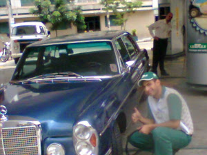

RICARDO BARROS
PORTFOLIO
Aqui eu vou falar de alguns lugares em que eu trabalhei
Meu primeiro emprego foi no Mc'Donalds, não foi fácil, porém ter trabalhado lá
abriu muitas portas pra mim.
Eu trabalhei em um fórum na avenida Paulista.
Essa foto do Masp foi tirada em 2008, e não pode mais
ser tirada desse ângulo,
porque agora exitem dois prédios na frente.

A profissão que eu mais exerci foi de frentista, foram 8 anos.
O engraçado é o cliente olhando pra mim...kkk

Atualmente eu sou taxista.
nessa foto eu estava em um evento, e fui obrigado a usar gravata!